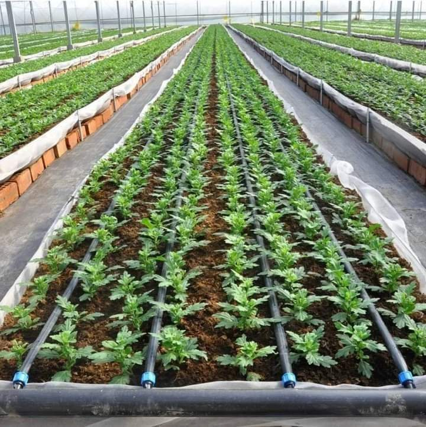
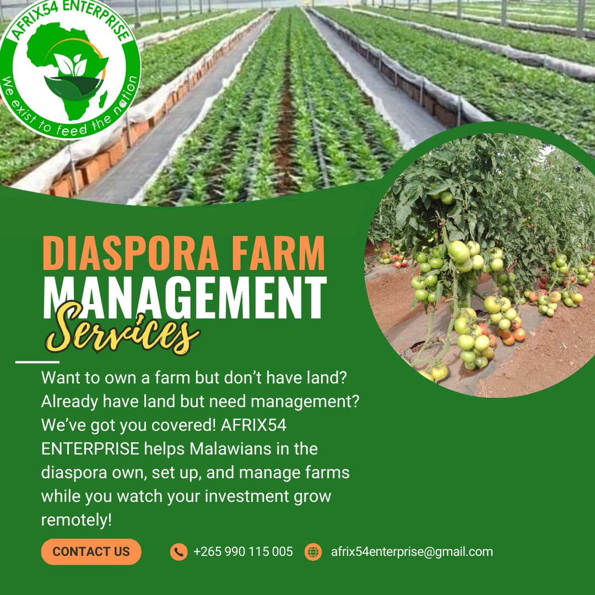

<!DOCTYPE html>
<html lang="en">
<head>
    <meta charset="UTF-8">
    <meta name="viewport" content="width=device-width, initial-scale=1.0">
    <title>afrix54</title>
    <link rel="stylesheet"href="style.css"/>
    <link rel="stylesheet" href="https://cdnjs.cloudflare.com/ajax/libs/font-awesome/6.7.2/css/all.min.css" integrity="sha512-Evv84Mr4kqVGRNSgIGL/F/aIDqQb7xQ2vcrdIwxfjThSH8CSR7PBEakCr51Ck+w+/U6swU2Im1vVX0SVk9ABhg==" crossorigin="anonymous" referrerpolicy="no-referrer" />
    <script src="https://code.jquery.com/jquery-3.6.4.min.js"></script>


</head>
<body class="bg-black">
    
    <div class="  min-h-screen p-5">
      
            <div class="relative h-64 w-full">
                <!-- Background image -->
                <div class="absolute inset-0 bg-[url('./images/pipo.jpg')] bg-cover bg-center rounded-b-lg p-5 "></div>
              
                <!-- Overlay with opacity -->
                <div class="absolute inset-0 bg-black bg-opacity-75  rounded-b-lg p-5 "></div>
              
                <!-- Your content stays visible and clear -->
                <div class="relative z-10 text-white ">
                 <header class="bg-[#FFFFFF20] rounded-b-2xl peer-checked:absolute ">
                    <div class="relative max-w-screen-lg py-4 flex flex-col sm:flex-row sm:items-center sm:justify-between"> 
                        <a class="flex flex-col  sm:items-center text-white"href="/">
                            <span class="ml-4"></span>
                            <span class="ml-2">Afrix54 Enterprise</span>
                           </a>
                          <input class="peer hidden"type="checkbox"id="navbar-open"> 
                          <label  class="p-5 sm:hidden cursor-pointer text-xl absolute right-0"for="navbar-open">
                            <i class="fa-solid fa-bars"></i>
                          </label>
                         
                           <nav class="peer-checked:block hidden mt-8 sm:mt-8  sm:block sm:bg-none">
                               <ul class=" items-center  gap-y-4 flex flex-col sm:flex-row  flex sm:gap-x-8 px-5 py-2 bg-orange-600 rounded-lg">
                                <li class="hover:font-bold "><a href="index.html">HOME</a></li>
                                <li class="hover:font-bold "><a href="services.html">SERVICES</a></li>
                                <li class="hover:font-bold "><a href="contact.html">CONTACT</a></li>
                                <li class="hover:font-bold "><a href="about.html">ABOUT</a></li>
                               </ul>
                           </nav>
                    </div>
                   
                 </header>
                  
        
                </div>
              </div>
              <div class="absolute top-0 left-0 w-full">
                <svg class="w-full h-24 rotate-180" viewBox="0 0 1440 320" preserveAspectRatio="none" xmlns="http://www.w3.org/2000/svg">
                  <path fill="#15803d" d="M0,224L60,202.7C120,181,240,139,360,144C480,149,600,203,720,229.3C840,256,960,256,1080,234.7C1200,213,1320,171,1380,149.3L1440,128L1440,320L1380,320C1320,320,1200,320,1080,320C960,320,840,320,720,320C600,320,480,320,360,320C240,320,120,320,60,320L0,320Z"></path>
                </svg>
            
              </div>
                    <section class="bg-black w-full text-white  relative overflow-hidden p-5">
                        <h1 class="text-xl font-bold text-center my-12 w-full border border-orange-600 rounded-full bg-green-950">Services</h1>
                        <div class="sm:grid grid-cols-3">
                           
                            <div class="overflow-hidden w-full max-w-[400px] h-[250px] rounded-lg border py-5">
                                
                              </div>
                              <div class="w-full max-w-[400px] h-[250px] rounded-lg border overflow-hidden py-5 ">
                                
                              </div>
                              <div class="overflow-hidden w-full max-w-[400px] h-[250px] rounded-lg border p-5"> <p>1.
                               We offer complete farm setup, monitoring, reporting, and 
                                transparent returns on investment. AFRIX54 manages everything—from land prep to 
                                harvest—ensuring peace of mind and impactful investment for diaspora clients. </p>
                              </div>
                           
                        </div>
                    
                        <div class="grid sm:grid-cols-3 my-5 ">
                           
                            <div class=" w-full max-w-[400px] h-[250px] rounded-lg border p-5">
                              <p> 2. Climate-Smart Farming Consultancy
                                We design, implement, and scale up sustainable farming systems, including regenerative 
                                agriculture, agroforestry, and organic horticulture tailored for climate resilience and 
                                productivity.</p> 
                    
                              </div>
                              <div class="w-full max-w-[400px] h-[250px] rounded-lg border p-5 ">
                               <p>
                                3. Agri-Innovation & Tech Integration
                                We integrate modern tools like drip irrigation, mobile extension services, and precision 
                                farming into traditional practices to increase yields and reduce environmental impact.
                               </p> 
                    
                              </div>
                              <div class="w-full max-w-[400px] h-[250px] rounded-lg border  p-5 ">
                                <p>
                                    4. Out-grower & Contract Farming Schemes
                                    We provide training, inputs, and guaranteed markets to smallholder farmers, increasing 
                                    their incomes and linking them to national and international value chains.                
                                    
                               </div>
                        </div>
                        <div class="grid sm:grid-cols-3 my-5">
                           
                            <div class=" w-full max-w-[400px] h-[250px] rounded-lg border p-5">
                              <p> 5. Agri-Education & Youth Empowerment
                                Through workshops, demo plots, and school partnerships, we promote Agrientrepreneurship and sustainable farming skills among young people.</p> 
                    
                              </div>
                              <div class="w-full max-w-[400px] h-[250px] rounded-lg border  p-5 ">
                               <p>
                                6. Agri-Tourism & Eco-Farming Experiences
                                We offer farm visit experiences, short Agri-courses, and eco-stays to promote knowledge 
                                sharing and raise awareness of sustainable agriculture.
                               </p> 
                    
                              </div>
                              <div class="w-full max-w-[400px] h-[250px] rounded-lg border  p-5 ">
                                <p>
                                    7. Processing & Value Addition
                    We engage in the processing and packaging of farm produce to improve shelf life, reduce 
                    post-harvest losses, and increase profitability.               
                    </p>
                               </div>
                        </div>
                        <div class="rounded-lg border p-5"id="container3"><p>8. Agro-Supply & Inputs Hub
                            Through our network, we provide high-quality seeds, tools, fertilizers, and organic inputs 
                            to our farmers and clients.
                            Bus</p></div>
                        
                      </section > 
                      
                       <!-- Shape Divider -->
    <div class="overflow-hidden leading-none">
        <svg class="block w-full h-24 text-orange-950" xmlns="http://www.w3.org/2000/svg" viewBox="0 0 1200 120" preserveAspectRatio="none">
          <path d="M0,0 C150,100 350,0 600,100 C850,200 1050,100 1200,0 L1200,120 L0,120 Z" fill="currentColor"></path>
        </svg>
      </div>
      
      <footer class="bg-orange-950 text-white py-8">
        <div class="max-w-7xl mx-auto px-4 grid grid-cols-1 md:grid-cols-3 gap-8">
          
          <!-- Logo & Description -->
          <div>
            
            <h2 class="text-2xl font-bold mb-2">Afrix54</h2>
            <p class="text-sm text-gray-400"> We exist to feed the nation. </p>
          </div>
      
          <!-- Quick Links -->
          <div>
            <h3 class="text-xl font-semibold mb-3">Quick Links</h3>
            <ul class="space-y-2 text-gray-300 text-sm">
              <li><a href="index.html" class="hover:text-white">Home</a></li>
              <li><a href="services.html" class="hover:text-white">Services</a></li>
              <li><a href="about.html" class="hover:text-white">about us</a></li>
              <li><a href="contact.html" class="hover:text-white">Contact</a></li>
            </ul>
          </div>
      
          <!-- Contact Info -->
          <div>
            <h3 class="text-xl font-semibold mb-3">Contact Us</h3>
            <p class="text-sm text-gray-400">Email: afrix54enterprise@gmail.com </p>
            <p class="text-sm text-gray-400">Phone: +265(0)990115005/+265(0)888280678</p>
            <p class="text-sm text-gray-400">Address: Area 22, near crazimatic schools, Lilongwe. </p>
            <div class="flex space-x-4 mt-3">
              <a href="#" class="hover:text-white"><i class="fab fa-facebook-f"></i></a>
              <a href="#" class="hover:text-white"><i class="fab fa-twitter"></i></a>
              <a href="#" class="hover:text-white"><i class="fab fa-instagram"></i></a>
            </div>
          </div>
      
        </div>
      
        <!-- Bottom bar -->
        <div class="mt-8 border-t border-gray-700 pt-4 text-center text-sm text-gray-500">
          © 2025 Afrix54. All rights reserved.
        </div>
      </footer>
                 </body>
                 </html>